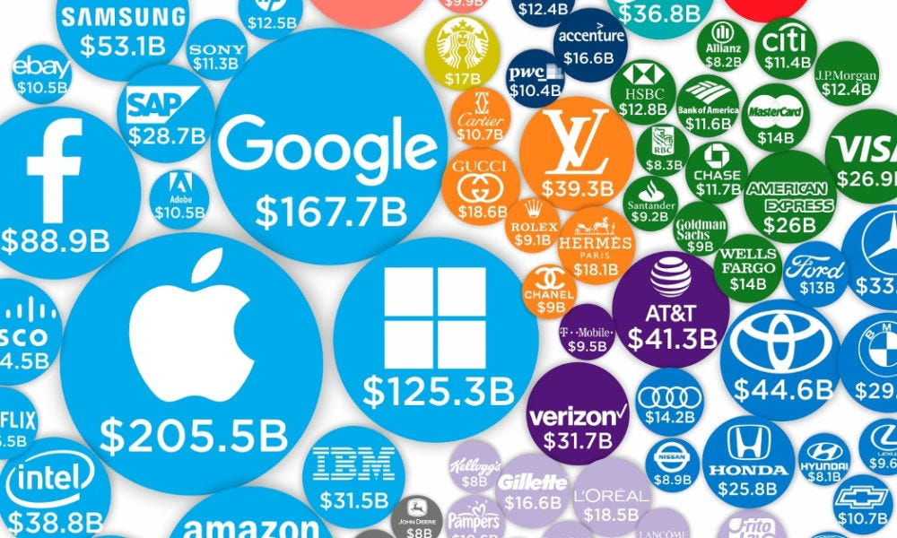

Feb 14
Data-Backed Business Models

Data backed business model can mean something different in your point of view but in mine, there are business models whose potential success is really proven by hard data and whose growth is entirely controllable and scalable with hard operational data coming from the execution of such business models I call Data backed business model. You can see that I could say that these business models are data-driven because of their scalability that is guided by operational data. I was not willing to use another VCs and Tech entrepreneurs buzzword but I finally did.
The best examples of such kinds of business models are the successful ventures of the dot-com bubble era and the social media era and are still those that are the most successful today in the option of the stock market and in my opinion, they will continue to lead our economy in the future. All I can hope for you and me is that they become engaged in making our lives better and not only selling us products and services that will make us hooked on chopping things. I was almost ready to give Google as an example but I think that Amazon and the social and e-commerce internet startups are the first examples Google happened to be the one that was entirely data-driven and among the first who started sharing some of the hard data it was getting with people like you and me but only early tech adopters like you were aware of the availability of these data even if they were here on a simple webpage readily accessible to people like me(kidding myself but I do). I think of Altavista, Multimania, yahoo way back a few years before and prodigy and CompuServe deserve credits as well. All of them were based on a data-backed business model because they were getting clear information about their target markets and how their products and services were being used and sold. What differentiates them from the actual and future business models is that they were not started with clear facts about their successes but today due to the huge amount of data and its accessibility business models can and are really proven by hard data.
But I am in trouble because seems like venture capital firms aren't basing their decisions on hard data but on team members, branding, and network of people, not hard data and networks effects while a single person like you could forage hard data on the internet, build business models with these data and with some spreadsheets and statistical models prove the successfulness of these business models and the possibility of you running it as single founder from launch to IPO because of your ability to automate and integrate existing solutions.
A capital that looks only at possibilities and opportunities of investments in one area silicon valley is not deserving the united states and the world. Silicon Valley is a mindset. The place and importance that I give the United States in the world make me cry this situation because this country could do a lot more locally and internationally as a nation of the diversity of thoughts that will be a leader at guaranteeing that all voices of human beings around the world should and will be considered. Digressing from this article about data and business models but the mantra of the early internet and how it was seen at least by me and how it was experienced is like the united states, connected people, a zone of freedom and liberty of actions and expression then I hope that you understand that my digression could be on topic.
Shiming on my situation but highlighting you an opportunity. This opportunity is as simple as telling you that it is possible for you to collect data and to find audiences and business models and execute these business models from start to success if you learn and work hard. If you commit, be patient and endure hard times that will for sure happen they can become billions of dollar companies like all these data-backed companies that lead today’s world economy.